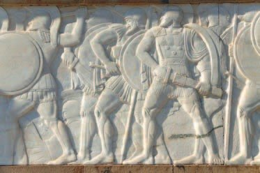
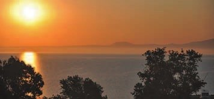
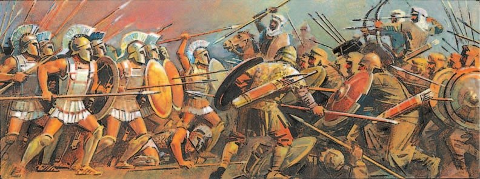
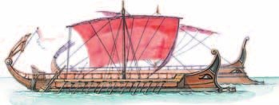
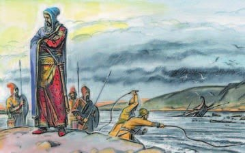
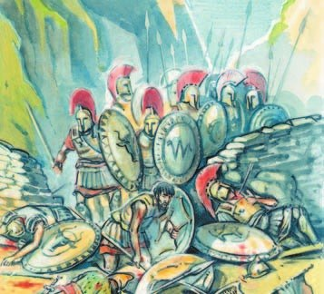

Начало войны. Битва при Марафоне
В конце VI века до н. э. над Грецией нависла беда — (§16). Её царь мечтал покорить весь мир. Персы завоевали всё от Индийского океана до Чёрного моря и подошли к Элладе.
Сначала они захватили греческие полисы на берегу Малой Азии: обложили тяжёлой данью и поставили своих правителей. В 500 году до н. э. греки там восстали. Центром восстания был Милет — тот самый, что основал 75 колоний (§24). Афины и Эретрия послали восставшим корабли. Но войска персидского царя восстание подавили: Милет разрушили, жителей продали в рабство. А помощь Афин стала для Дария поводом напасть на саму Грецию.
Дарий разослал по полисам послов: отдайте — то есть признайте мою власть. Многие полисы испугались и согласились. Отказали только двое: в Афинах послов сбросили со скалы, в Спарте — в колодец. Вот вам, мол, и земля, и вода. Взбешённый Дарий решил наказать непокорных.
В 490 году до н. э. 20 тысяч персов переплыли Эгейское море и высадились в Аттике у местечка . Все афиняне, кто мог носить оружие, вышли защищать родину, к ним пришла тысяча воинов из города Платеи. Спартанцы помощь отложили — по одной из версий, у них был праздник в честь Аполлона. Афиняне остались почти одни.
Полководец придумал хитрость. Войско у него маленькое — и он сделал центр строя слабым, а края, фланги, — сильными, в много рядов. А последние 100 метров до врага гоплиты бежали бегом: так меньше воинов гибло от стрел, а удар фаланги был сильнее.
Персы прорвали слабый центр. Но сильные фланги ударили с двух сторон — и персы побежали к кораблям. Греки гнались за ними и захватили несколько кораблей. Погибло больше 6 тысяч персов и всего 192 грека. Их похоронили с почестями и насыпали над могилой курган.
По легенде, Мильтиад сразу послал в Афины гонца с вестью о победе. Тот прибежал на агору, успел крикнуть радостную весть — и упал замертво. В его память на Олимпийских играх бегут марафон — 42 километра 195 метров.
Весть о Марафоне облетела всю Грецию: оказалось, персов можно победить!
В конце VI (6) века до н. э. над греками нависла угроза завоевания их родины Персидской державой. В это время она представляла собой могущественное государство, а её царь мечтал покорить весь мир. Персы, завоевавшие все страны от Индийского океана до Чёрного моря, приблизились к Элладе.
Первыми персы захватили греческие полисы на побережье Малой Азии, обязали их платить тяжёлую дань и назначили здесь правителями своих ставленников. Свободолюбивые греки в 500 году до н. э. подняли восстание. После нескольких поражений восставшие обратились за помощью к полисам на Балканах. Афины и Эретрия отправили корабли в Милет, который был центром восстания. Но его подавили войска персидского царя Дария I (1). Город Милет был разрушен, а оставшиеся в живых жители проданы в рабство. Помощь, оказанная восставшим, стала предлогом для Дария отомстить Афинам и начать войну против материковой Греции.
Любопытные детали. Персидский царь разослал во все греческие полисы послов, требуя от населения «земли и воды», что означало признание его власти. Многие полисы, опасаясь расправы, учинённой в Милете, выполнили требования Дария. Только два отвергли притязания персов. В Афинах граждане сбросили послов со скалы, в Спарте — в колодец, предложив тем самым взять «землю и воду». Взбешённый Дарий решил наказать непокорные полисы.
В 490 году до н. э. 20 тысяч персидских воинов на кораблях преодолели Эгейское море и высадились на побережье Аттики у местечка Марафон. Все граждане, способные носить оружие, выступили на защиту родного полиса. К ним присоединилась тысяча воинов из города Платеи. Афиняне обратились за помощью к Спарте, но спартанцы отложили выступление своего войска (по одной из версий, потому, что в то время они отмечали большой религиозный праздник в честь Аполлона). Афинянам оставалось рассчитывать только на свои силы.
Афинский полководец Мильтиад, располагая небольшим войском, перед сражением ослабил его центр, но усилил фланги большим количеством рядов воинов. По его приказу последние 100 метров перед вражескими воинами гоплиты должны были преодолеть бегом, чтобы снизить потери от выпущенных противником стрел и усилить удар бегущей фаланги.
Во время сражения войско Дария смогло прорвать слабый центр греков. Однако ответный удар сильных флангов опрокинул персов, и они бросились к своим кораблям. Греки преследовали врага и захватили несколько кораблей. Более 6 тысяч персов было уничтожено. Потери греков составили 192 человека. Их похоронили с почестями, а над могилой насыпали погребальный курган.
Известие о победе в Марафонском сражении облетело всю Грецию. Оно рассеяло миф о непобедимости персидской армии.


- Почему Дарий I повёл свои войска на Грецию?
1. Милет основал 75 колоний (§24) и стал центром восстания. Что с ним случилось — и как это напугало другие полисы?
2. Как маленькое войско Мильтиада победило 20 тысяч персов? Найди две хитрости.
3. Почему победа при Марафоне так много значила для всей Греции, хотя сражались почти одни афиняне?
Фемистокл
Марафон не закончил войну. Дарий умер, но новый царь — его сын — пока был занят: усмирял покорённые народы.
В Афинах понимали: Персия — морская держава, и победить её можно только с сильным флотом. Так думал и полководец . Было предсказание, что Афины от персов спасут «деревянные стены». Фемистокл хитро объяснил: «деревянные стены» — это военные корабли!
На серебро из Лаврийских рудников (§23) афиняне быстро построили 180 — лучших военных кораблей того времени. Ты каталась на вёсельной лодке — а на триере гребцы сидели в три ряда, один над другим. Гребцами и матросами служили простые граждане, и их влияние в Афинах от этого выросло.
Ещё Фемистокл мирил полисы, которые враждовали друг с другом: одним Афинам такого врага не одолеть. По его почину 30 полисов во главе с Афинами и Спартой заключили союз против персов. Фемистокл стал стратегом афинского флота, а главное командование и на суше, и на море отдали спартанцам.
Победа греков в Марафонском сражении и последовавшая позже смерть персидского царя Дария не означали окончания войны с персами. Но новый царь Персидской державы Ксеркс, сын Дария, был занят усмирением покорённых народов, и пока ему было не до греков.
В Афинах понимали, что победа над морской державой, какой и являлась Персия, возможна только при наличии сильного флота. Одним из тех людей, кто разделял это мнение, был политический деятель и полководец Фемистокл. Он убедил в этом сограждан, хитроумно используя предсказание, что Афины от персов спасут «деревянные стены». Этими «деревянными стенами» должны были стать военные корабли.
Фемистокл приложил немало усилий, чтобы примирить многие враждовавшие между собой полисы и объединить греков. Афинам в одиночку было трудно противостоять могущественному врагу. По его инициативе 30 греческих полисов во главе с Афинами и Спартой заключили союз для борьбы с персами. Фемистокла назначили стратегом афинского флота, верховное командование на суше и на море передали спартанцам.

- Какую роль сыграл Фемистокл в объединении греков в борьбе с персами?
4. Как серебро из рудников превратилось в победу на море? Свяжи §23 и этот раздел.
5. Почему морская служба сделала простых афинян влиятельнее? Вспомни фетов из §26.
Вторжение Ксеркса. Битва при Фермопилах
Весной 480 года до н. э. Ксеркс двинулся на Элладу: около 150 тысяч воинов и почти 800 кораблей.
Чтобы переправиться через пролив Геллеспонт (сейчас Дарданеллы), он велел построить мост. Буря мост разрушила. Разъярённый царь казнил строителей, а море приказал высечь кнутами! Потом сделали новый мост: связали корабли канатами и положили сверху помост. Войско перешло и заняло Северную Грецию.
«Ксеркс, секущий море» — так потом говорили о человеке, который винит в своих неудачах кого угодно, только не себя.
Дальше путь шёл через : с одной стороны отвесные скалы и горы, с другой — море. Проход узкий.
Там встало союзное греческое войско во главе со спартанским царём . В тесноте огромное войско персов ничего не могло сделать и несло большие потери. Ксеркс бросил в бой лучших — 10 тысяч . Гоплиты разбили и их.
Но нашёлся предатель: за золото он провёл персов тайными тропами в тыл грекам. Леонид понял, что их окружат, и велел всем отступить — кроме спартанцев. Закон чести запрещал спартанцам уходить с поля боя (помнишь «С ним или на нём!» из §27?). 300 спартанцев и несколько сотен добровольцев из других полисов остались и приняли бой.
Все они погибли. Но их подвиг поднял дух всех греков — и уже через год греки начали побеждать персов.
Весной 480 года до н. э. Ксеркс с огромным войском, в котором было около 150 тысяч воинов и почти 800 кораблей, вторгся в Элладу. Для переправы через пролив Геллеспонт (Дарданеллы) он приказал построить мост, но буря уничтожила его. Разъярённый царь казнил строителей, а воды пролива приказал сечь кнутами. По новому мосту — персы связали канатами корабли, а сверху положили помост — войско переправилось в Северную Грецию и заняло её.
Дальнейший путь, соединявший Северную и Среднюю Грецию, пролегал через Фермопильское ущелье. С одной стороны поднимались отвесные скалы и горные хребты, с другой — раскинулось море.
Союзное греческое войско во главе со спартанским царём Леонидом заняло здесь оборону. В узком месте численное превосходство персов оказалось бесполезным, они несли большие потери. Ксеркс бросил в бой свои лучшие отряды — 10 тысяч «бессмертных». Греческие гоплиты разбили их, упорно защищая вход в ущелье. Однако в рядах греков нашёлся предатель, который за золото провёл персов тайными тропами в тыл. Царь Леонид ввиду угрозы окружения приказал всем, кроме спартанцев, отступить. Закон чести запрещал спартанцам покидать поле боя. 300 спартанцев и ещё несколько сотен добровольцев из других полисов, решившихся остаться со спартанцами, приняли бой.


- Подумай, какое значение имело Фермопильское сражение для борьбы греков за свободу.
6. Почему у Фермопил горстка греков могла сдерживать огромное войско? Вспомни природу Греции из §20.
7. Спартанцы остались, хотя знали, что погибнут. Какие законы Спарты из §27 это объясняют?
8. Сравни Фермопилы и взятие Трои (§22). Что общего?
Саламинское сражение
Персы шли к Афинам. По совету Фемистокла афиняне ушли из города: женщин и детей увезли на Пелопоннес, а мужчин, способных воевать, — на остров . Там собрался весь греческий флот — 380 кораблей, из них 180 афинских.
На глазах у греков персы сожгли Афины. Греки решили не отстраивать город, пока не выгонят захватчиков из Аттики.
Испуганные союзники хотели увести флот к Пелопоннесу. Но Фемистокл уговорил остаться: в узком проливе персы не смогут пустить в ход все свои корабли.
Битва при Саламине была 28 сентября 480 года до н. э. Персидские корабли вошли в узкий пролив — и строй сломался. Корабли сбились в кучу и перестали слушаться руля. Греческие триеры бросились в атаку. Большую часть персидских кораблей уничтожили.
Ксеркс ушёл из Греции, но оставил войско с полководцем Мардонием. В 479 году до н. э. у города объединённое греческое войско разбило персов: погибли и «бессмертные», и сам Мардоний. В том же году греческий флот победил у мыса Микале.
Война шла ещё несколько десятков лет, в основном на море, и главным стал афинский флот. Афины освободили от персов все греческие полисы. В 449 году до н. э. заключили мир: персы признали независимость всех греческих полисов, а персидским кораблям запретили плавать в Эгейском море.
Персы двигались к Афинам, оставленным жителями. По совету Фемистокла афиняне переправили женщин и детей на Пелопоннес, боеспособных граждан — на Саламин, где собрался весь союзный греческий флот в составе 380 кораблей (Афинам принадлежали 180 судов), составлявших главную силу греческого войска.
На глазах греков персы сожгли занятый ими город. Греки не восстанавливали Афины до тех пор, пока не выгнали захватчиков из родной Аттики.
Эллины, устрашённые пожаром, хотели переправить флот к берегам Пелопоннеса. Фемистокл убеждал союзников остаться и дать сражение у Саламина. Он знал, что в узком проливе персы не смогут использовать все свои корабли.
Саламинское сражение произошло 28 сентября 480 года до н. э. Корабли персов вошли в узкий Саламинский пролив, где их строй нарушился. Корабли сбивались в кучу, теряя управление. Греческие триеры атаковали противника. Персы не выдержали натиска, большая часть их кораблей была уничтожена.
Ксеркс ушёл из Греции, но оставил здесь войско под командованием полководца Мардония. В 479 году до н. э. у города Платеи произошло сражение объединённого греческого войска с персами. Лучшая часть персидского войска — «бессмертные» — погибла вместе со своим полководцем. В том же году греческий флот одержал победу у мыса Микале.
Греко-персидские войны продолжались ещё несколько десятков лет. Сражения в основном проходили на море. Решающая роль в войне перешла к афинскому флоту. Под руководством Афин от персов были освобождены все греческие полисы. В 449 году до н. э. был заключён мир. Персы признали независимость всех греческих полисов, персидским судам запрещалось плавать в Эгейском море.
- Почему греки смогли отстоять свою свободу от персидских захватчиков?
9. Как сбылось предсказание о «деревянных стенах» из раздела 2?
10. Чем мир 449 года до н. э. был выгоден грекам? Сравни с тем, с чего война началась.
Подведём итоги
- За что, по легенде, Ксеркс высек море?
- Расскажи о главных сражениях Греко-персидских войн.
- Определи, сколько лет продолжались Греко-персидские войны. Каковы были их итоги?
- Используя дополнительные источники информации, подготовь сообщение об одном из сражений Греко-персидских войн или их известных участниках на твой выбор. Представь работу перед классом.
Прочитай отрывок из текста античного автора и выполни задание: определи и напиши, о каком событии рассказывается.
…Одержав победу, персы прорвали строй афинян и погнали их вглубь материка. Но на обоих флангах победа была на стороне афинян и платейцев. Победив противника, они не стали преследовать бегущих варваров, а, сомкнув оба фланга, вступили в бой с теми варварами, которые прорвали центр, и в этой стычке афиняне победили. Обращённых в бегство персов афиняне преследовали.
Сформулируй ответ на главный вопрос параграфа — почему огромная Персидская держава не смогла покорить разрозненные греческие полисы? Приведи два-три довода.
Проверь себя
Нажимай по очереди — от самого древнего к самому близкому к нам.
1. Что персидские послы требовали от греческих полисов?
2. Кто командовал греками при Марафоне?
3. Что Фемистокл называл «деревянными стенами»?
4. Кто возглавил греков у Фермопил?
5. Почему персы проиграли при Саламине?
6. Чем кончились Греко-персидские войны в 449 году до н. э.?
Расскажи вслух
Начало войны и Марафон
- Персы захватили полисы Малой Азии; в 500 году до н. э. восстание с центром в Милете, Афины помогли; Дарий разрушил Милет.
- «Земля и вода»: Афины и Спарта отказались; в 490 году до н. э. 20 тысяч персов высадились у Марафона.
- Мильтиад: слабый центр, сильные фланги, бег последние 100 метров; 6000 персов и 192 грека; марафонский бег.
Фемистокл и флот
- Персия — морская держава, нужен флот; «деревянные стены» — это корабли.
- 180 триер на серебро Лаврийских рудников; гребцы — простые граждане.
- Союз 30 полисов во главе с Афинами и Спартой.
Фермопилы
- 480 год до н. э.: Ксеркс, 150 тысяч воинов и 800 кораблей; мост через Геллеспонт и «высеченное» море.
- Узкое ущелье: царь Леонид, в тесноте персы бессильны, «бессмертные» разбиты.
- Предатель провёл персов в тыл; 300 спартанцев и добровольцы остались и погибли — пример для всех эллинов.
Саламин и конец войны
- Афиняне покинули город, персы его сожгли; флот — 380 кораблей у Саламина.
- 28 сентября 480 года до н. э.: в узком проливе персидские корабли сбились в кучу и были разбиты.
- 479 — Платеи и Микале; 449 — мир: независимость греческих полисов.
Главный вопрос: почему Персия не покорила Грецию
- Греки объединились: союз 30 полисов, Фемистокл, общее командование.
- Побеждали умением: хитрость Мильтиада, бой в тесных местах, сильный флот.
- Защищали свою свободу и свою землю — как спартанцы у Фермопил.